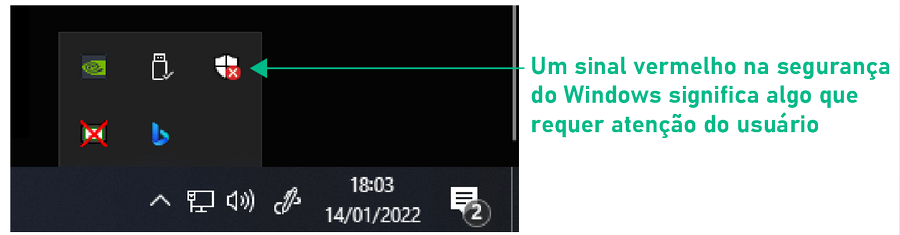
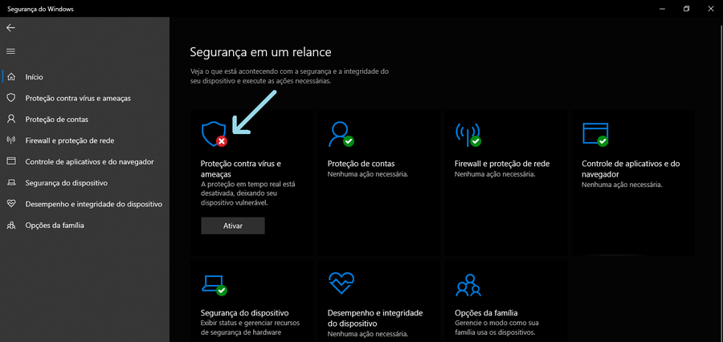

O Microsoft Defender é o antivírus padrão do Windows, é um antivírus confiável e poderoso e que conta com atualizações de segurança frequentes.
Para acessar a central de segurança do antivírus clique em Configurações no menu Iniciar e selecione Segurança do Windows.
Assim que a central de segurança abrir você verá na tela inicial alguns itens que devem ter um sinal verde de verificação. Se algum deles apresentar um sinal vermelho com um X clique para ver as opções de correção.
Podemos checar se a segurança do Windows requer alguma atenção especial clicando através da área de notificações, como mostrado na imagem abaixo. 
Quando o antivírus ou algum módulo de segurança do Windows está desativado, desinstalado, desatualizado ou com algum outro problema, um alerta aparece na central de segurança como mostrado abaixo. 
O básico para manter o computador seguro é mantê-lo atualizado e com o antivírus ativado, mas caso encontremos algum problema podemos executar uma verificação. Existem três opções básicas, vejamos cada uma delas.
Na Central de Segurança, clique em Proteção Contra Vírus e Ameaças.
Um botão aparecerá com a opção de Verificação Rápida. A verificação rápida costuma demorar alguns minutos apenas e verifica somente as pastas onde os vírus costumam ser encontrados.
Clicando em Opções de Verificação, encontraremos além da verificação rápida as opções: Verificação Completa, Verificação Personalizada e Verificação Offline.
A Verificação Completa verifica todos os arquivos e pastas no computador em busca de ameaças e costuma demorar mais tempo a depender da quantidade de arquivos e da capacidade de processamento do computador.
A verificação personalizada permite definir qual ou quais pastas queremos verificar, e pode ser útil para verificarmos uma unidade externa como um pen-drive.
É possível verificar uma pasta, arquivo ou dispositivo externo diretamente no Explorador de Arquivos clicando com o botão direito do mouse sobre o item que queremos verificar e escolhendo “Verificar com o Microsoft Defender”.
Algumas ameaças conseguem se esconder no Windows, e até mesmo desativar ou impedir o antivírus, para isso podemos utilizar a Verificação Offline. Esse tipo de verificação é comumente utilizado em computadores muito infectados. A Verificação Offline reinicia o computador e efetua uma varredura no sistema antes do Windows ser inicializado para que possa reconhecer a ameaça antes que ela se inicie, já que assim como outros programas, os vírus só iniciam junto com o Windows.
Quando o antivírus encontra uma possível ameaça, um alerta é emitido informando ao usuário sobre a situação. Essa ameaça é então enviada à quarentena, um setor onde ela não oferece perigo ao funcionamento do computador. Na quarentena os arquivos aguardam que o usuário os restaure ou remova-os, para tal, essa ameaça constará no histórico de proteção do antivírus. Basta acessarmos, e selecionar remover, caso seja uma ameaça real ou restaurar caso seja um falso positivo.
Quando o antivírus reconhece como ameaça um arquivo que temos certeza não representar ameaça nenhuma, isso se chama falso positivo, para continuarmos utilizando este arquivo ou programa devemos incluí-lo na lista de exclusões, que são arquivos que o antivírus não verificará.
É preciso tomar cuidado ao incluir um arquivo na lista de exclusões. Antes de fazer isso sugiro que pesquise bem sobre o arquivo para saber que riscos ele pode oferecer.